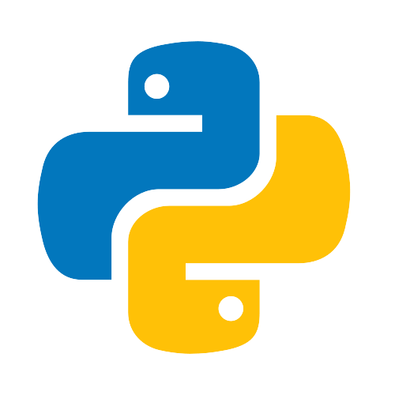
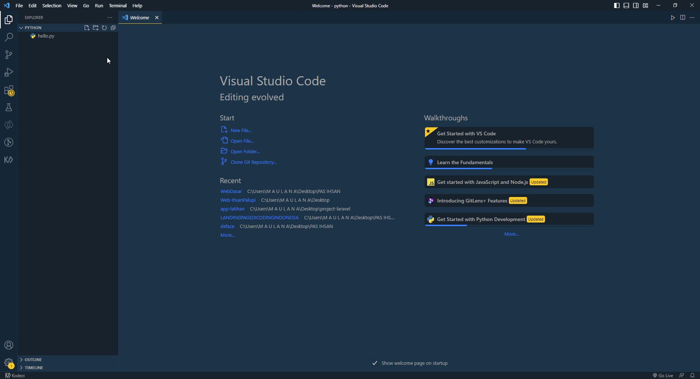
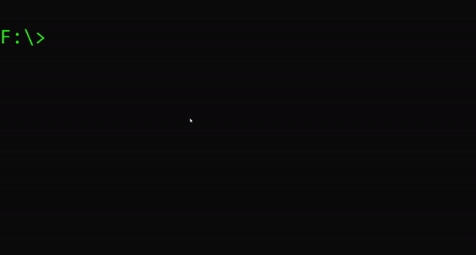

Python
Python adalah sebuah bahasa pemrograman tingkat tinggi yang sering digunakan untuk pengembangan aplikasi berbasis web, ilmu data, kecerdasan buatan (AI), dan banyak lagi. Python pertama kali dirilis pada tahun 1991 oleh Guido van Rossum dan sejak itu telah menjadi salah satu bahasa pemrograman paling populer di dunia. Python dikenal karena sintaksisnya yang sederhana dan mudah dipelajari, serta memiliki banyak library dan framework yang mendukung pengembangan aplikasi. Selain itu, Python juga open source dan dapat digunakan pada berbagai sistem operasi, seperti Windows, Linux, dan macOS.
Python ada berapa Versi?
Saat ini, ada dua versi utama dari Python yang aktif dan didukung oleh komunitas Python, yaitu Python 2 dan Python 3. Namun, Python 2 telah mencapai akhir masa dukungannya pada tanggal 1 Januari 2020, sehingga hanya Python 3 yang saat ini masih mendapatkan dukungan resmi dan disarankan untuk digunakan dalam pengembangan aplikasi.
Versi Python 3 terus diperbarui dan saat ini tersedia dalam beberapa subversi, seperti Python 3.10, Python 3.9, Python 3.8, Python 3.7, dan lainnya. Setiap subversi Python 3 mungkin memiliki perubahan minor dalam fitur dan fungsionalitas yang tersedia.
Sebelum Python 3, ada juga beberapa versi Python 2.x, seperti Python 2.7, Python 2.6, dan lainnya. Namun, Python 2.x tidak lagi mendapatkan dukungan resmi dan tidak disarankan untuk digunakan dalam pengembangan aplikasi baru.
Berikut adalah langkah-langkah untuk membuat program Python dasar:
- Install Python: Anda perlu menginstal Python pada komputer Anda. Anda dapat mengunduh dan menginstal Python dari situs web resmi Python, https://www.python.org/downloads/ .
- Buat file Python: Buat file baru pada editor teks seperti Notepad atau Visual Studio Code,
kemudian simpan file tersebut dengan ekstensi .py. Sebagai contoh, simpan file dengan nama
hello.py
. Atau bisa di lihat pada gambar di bawah ini jika belum jelas :
 - Buka lah file yang sebelum nya Anda simpan yang ber-ekstensi
hello.py - Tulis kode program Python. Misalnya, untuk mencetak
Hello, World!
di layar, tulis kode berikut:
print("Hello, World!")
- Setelah selesai menulis kode, simpan file dengan ekstensi
.py
di direktori yang diinginkan. Pastikan bahwa nama file yang Anda buat tidak sama dengan nama modul atau pustaka yang sudah ada di Python. - Jalankan program Python yang telah dibuat dengan menekan tombol
Run
pada IDE atau Visual Studio Code atau dengan mengetikkan perintahpython namafile.py
di command prompt (Windows) atau terminal (Linux/MacOS). Contoh-nya seperti berikut :

- Periksa output program yang dihasilkan. Jika tidak ada kesalahan, output program akan muncul di layar, seperti di atas.